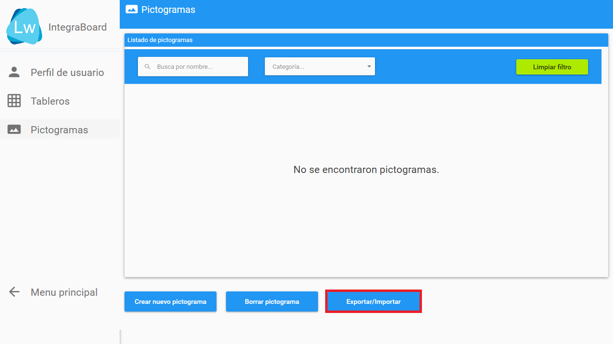

Importar pictogramas a IntegraBoard
Prerrequisitos
- Perfil creado.
- Pictogramas descargados y descomprimidos (Tutorial).
Paso a paso
- Seleccionar el botón "Configurar tableros".

- En la nueva ventana, seleccionar el botón "Pictogramas".

- En la sección de pictogramas, seleccione el botón "Exportar/Importar".

- Dentro del módulo "Exportar/importar" seleccionar "Importar" (marcado en verde) y luego el botón "Seleccionar carpeta".

- En la ventana que se que abrió, elija la carpeta que contiene los pictogramas descargados y seleccione el botón "Aceptar".

- Comenzará a cargar una lista con todos los pictogramas que se importarán. Para comenzar la importación, seleccione el botón "Aceptar importación".

- Una vez haya finalizado la importación, se mostrará el dialogo que confirma la finalización de la operación recién realizada.

- Finalmente, vuelva a la sección "Pictogramas" e IntegraBoard mostrará todos los pictogramas ahora disponibles.